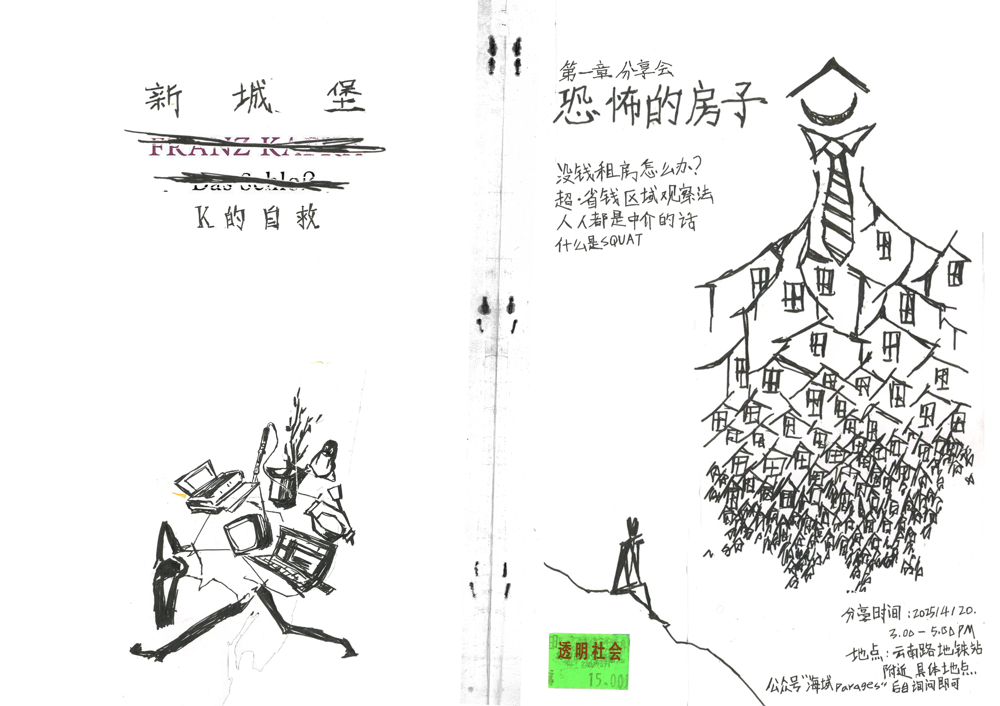
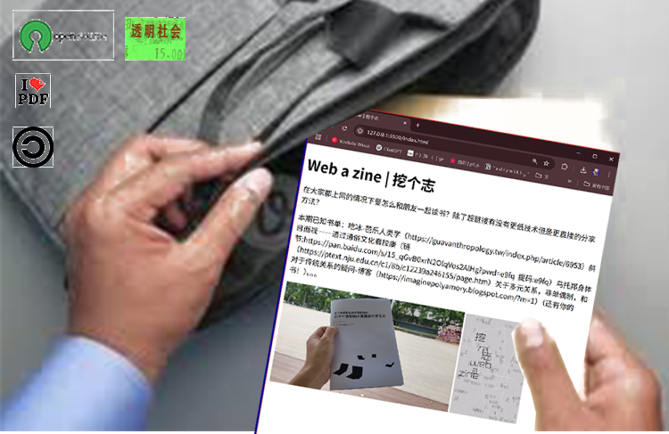
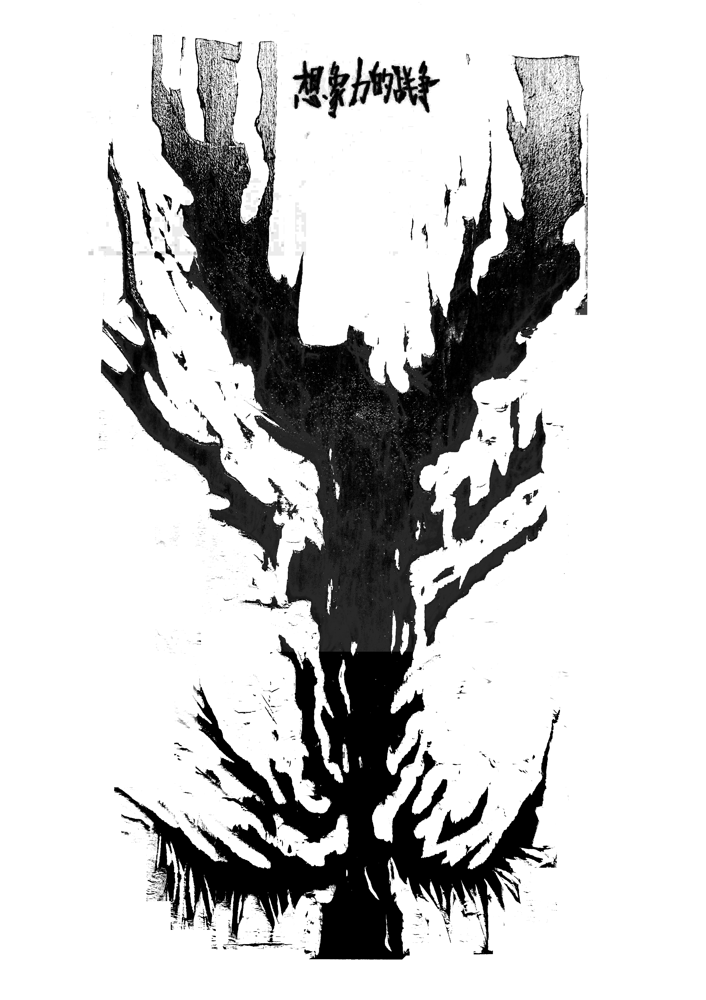
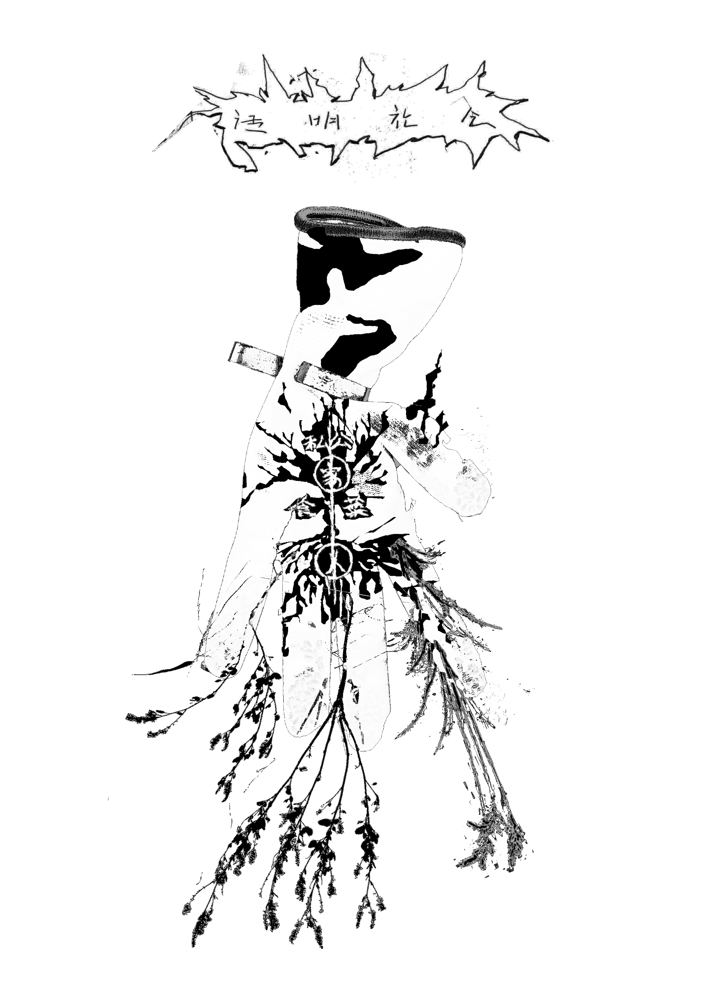

2025/4- Transparent Society is a third space located in Nanjing, situated in the Gulou-Yunnan Road area, the political and cultural center of Nanjing. It's a rectangular bungalow of about 10 square meters, estimated to be over 70 years old. The house has a wooden beam structure with a shed roof. Inside, there's a long table with nine chairs, accommodating up to 15 people. There's no bathroom, bedroom, or kitchen; it's essentially just a bedroom with a wardrobe and mirror. (The air conditioning was installed by the landlord six months after the space was completed). The previous tenants were three brothers who worked in parking management in Nanjing. They stayed in the room, smoked, and cooked with an induction cooker. The north-facing window, facing a modern residential complex, was initially sealed off; the previous tenants wrote "God loves the world" on the wall. The landlord is a 79-year-old man from Chuzhou, Jiangsu, living alone. He suffers from asthma and diabetes; his wife passed away six months before the space's completion. The landlord has a dog (named "Baby") and a myna (named "Myna"). Within a year of the space's establishment, he also adopted two unnamed mynah birds, two dogs (one of which we named Wittgenstein), and a cat (he named Miao, and we named her Baudrillard). The landlord's room was right next to Transparent Society. It was a two-bedroom apartment, one room serving as the kitchen and dining room, and the other as the living room. A partitioned area was also carved out of the living room to house a toilet. Opposite the landlord's bed was a therapy bed that had previously belonged to his wife. The dog (Baby) was usually tied up in the aisle between the two beds. Food and a television were placed on the landlord's bed, and the rest of the room was filled with various recyclables, tools, and plastic bags of unknown contents. The discovery of Transparent Society was thanks to a scrap collector who frequented the area. After learning of our need for a bungalow, he drove us all the way to the current location of Transparent Society on his tricycle. Initially, the landlord asked for 1000 yuan/month, which we negotiated down to 800 yuan/month, payable quarterly (electricity was paid by us, water by the landlord). The landlord, an elderly gentleman, single-handedly completed the initial design and setup of the space (including making a table for slogan discussions, removing bed frames from the bedrooms, etc.). We later added bookshelves, monitors, and other amenities. The initial goal of Transparent Society was to create a third space autonomously run by young people (especially students), aiming to provide a space for discussion and practice on neglected or never-before-mentioned issues. From April 18th to November 22nd, 2025 (updated November 21st, 2025), Transparent Society held a total of 19 events. 1. Transparent Society | K's Self-Rescue | A Terrifying House Sharing Session + Rice Noodle Soup (Time: April 20th, 3 PM to 5 PM (all times are starting in 2025)). This event, the first in the series "New Castle - K's Self-Rescue," sets the tone for the series' exploration of hacking into complex systems to obtain survival resources. The series fictionalizes and continues Kafka's novel *The Castle*, contrasting the geographical structure of the shantytown surrounded by government buildings with the castle's location in the novel. It creates the event of K breaking into a real estate agency to find a foothold in a vast system, using this as a starting point to discuss how to exploit system vulnerabilities in secondhand housing platforms and urban observation methods to find cheap housing (this also references observations of Nanjing's housing structure and street characteristics during the implementation of the "Transparent Society" concept). It further discusses the implications of squatting culture and its impact on the right to survival. 2. Transparent Society | Web a Zine | Surfing, Creating, and Reading Together (May 2nd, 6 PM to 8 PM): The Web a Zine series aims to break away from traditional print media reading and dissemination thinking. Instead, it explores the possibility of hypertext reading and sharing through the process of collecting, transforming, and printing web pages. 3. Transparent Society | Decentralized Server Workshop Part 1 | Download apt install! (May 10th, 7 PM to 10 PM): Brazilian artist Lucas's workshop focuses on building a self-managed server. It explores and practices free and open-source software and the Linux operating system. The workshop organizers also attempt to use these results to collaboratively create content and upload it to their self-built server. (Interestingly, the space where the Transparent Society is located has never been connected to the internet.) 4. Transparent Society | Home as a Server | Sharing Session & Online Connection | Local Tea Party (Time: May 17th, 7 PM to 10 PM) This sharing session was an extension and transformation of the previous server workshop (because self-hosting involves internet censorship in China). The event discussed how technology companies have taken away the soft and private aspects of digital life, and how some online communities are using home-hosting and decentralized methods to reclaim control of personal information from social media. The event included readings from THE COUNTERFORCE's manual and a connection with the hombrewserver.club, a home-hosted server club in the Netherlands. 5. Transparent Society | Love Like a Bird | Live Connection with Ecuadorian Band Pánico (June 1st, 10 PM) The event coincides with the release of the Ecuadorian indie game *Despelote*, which uses electronic narrative to recreate the turbulent Ecuadorian society during the Copa America. The event planned to include an interview with Pánico, the band that composed the game's soundtrack, to discuss their expression of urban atmosphere, literature, and love in the age of online narratives (the interview was ultimately cancelled due to the band oversleeping). 6. Transparent Society | Graduation Turns into Unemployment | Mentorship and Barter Relief Association (June 13th, 7 PM) Coinciding with university graduation season, an event was held focusing on farewells, packing bags, and employment. 7. Transparent Society | China Mobile | Web a Zine Vol.2 (June 21, 7 PM) The second installment of the "Digging a Zine" series, themed around the Chinese people's constant mobile survival, and featuring one of China's largest telecommunications providers. 8. Transparent Society | Shida Park Fundraising Concert (June 29, 7 PM) Transparent Society, facing its second quarterly rent payment, held a concert to raise funds for rent (ultimately raising 2200 yuan, just 200 yuan short of the goal). 9. Transparent Society | From Macanese Portuguese to Internet Infrastructure (July 1, 7 PM) Invited Shanghai-based creators Tian Qi and Yue Min to share their research on Macanese Portuguese and the history of the internet. 10. Transparent Society | How to Turn Your City into a Village | Solarpunk Cartographer (July 14, 6 PM) This event elucidates the concept of "solarpism," using walkthroughs and mapping to record and observe community practices aligned with green energy and smart technology, aiming to document and intervene in gentrification behaviors. 11. Transparent Society | K's Self-Rescue | Irreparable (August 24) From 8 PM to 11 PM, as a continuation of the "New Castle - K's Self-Rescue" series, this workshop further modified Kafka's original work, adding the real-life concept of smart recycling bins that offer cash rewards for recycling. Starting with this, Dutch artist Dennis from Shanghai led participants in a live test of the smart recycling system (AiRecycle Garbage Station) and discussed the possibility of cracking and tracking this system. Discussions covered how irreparable recyclable items affect our lives, how the entry of commercial recycling equipment into communities impacts people's lives, and whether this serves as a window for intervention and observation of resource utilization. 12. Transparent Society | Z-Point Interview | Generation Press Conference (Date: September 19th) From 8 PM to 11 PM, several social movements led by Generation Z erupted concurrently across Asia, generating profound impact. The way Generation Z depicted revolution and the role of social media made these movements unique. Therefore, this event took the form of a press conference, interviewing Generation Z activists from Indonesia, including muzeian and lili, to discuss the forms and characteristics of Generation Z social movements. 13. Transparent Society | The Ghost of Low Temperatures | Web a Zine Vol.3 (September 28th, 7 PM), the third installment pays homage to British philosopher Mark Fisher. 14. Transparent Society | Breakfast And Circuit Bending Workshop (October 5th) From 8 AM to 3 PM, this workshop invited Dutch artist Dennis from Shanghai and artist Liu Chang from Nanjing to explore the re-creation of everyday secondhand electronic items through circuit modification. They also observed the circulation path of recycled materials from a secular perspective by delving into urban secondhand markets (morning markets). The workshop included teaching and practice on the connection, analysis, and intervention of electronic devices, and explored the technological boundaries of commercial electronic records, enhancing users'/consumers' ability to intervene in and control electronic products. 15. Transparent Society | Resurrection Ritual: This workshop, addressing the discontinuation of Windows 10 support and Linux installation services, encourages showcasing the device system replacement process as part of public education. 16. Transparent Society | Painful Tricycle | Tell me about an anime character with diabetes (October 20-30). The landlord has an abandoned tricycle parked outside his door, which he says he used when he was doing street cleaning and recycling. This tricycle workshop borrows the concept of "itasha" (anime-themed car) from Japanese otaku culture, transplanting the concept of pain from embarrassment to the pain of abandonment and physical suffering. Participants will collaborate with the landlord to refurbish the abandoned tricycle and decorate it with pop culture decals. (See Activity 18 for follow-up.) 17. Transparent Society | The Ghosts in My Life Have Resurfaced in the Cold Weather | Ghost Reading (October 24, 7 PM): Philosophy students Xiao Jiang and Mai from Nanjing will lead a reading of Mark Fisher's *The Ghosts in My Life*. The event will discuss concepts such as nihilism, ghost studies, and acid communism. 18. Transparent Society | The World is a Big Retirement Home | Itasha Concert (October 30) From 4 PM to 8 PM, using a tricycle created during a previous itasha (decorated car) workshop as a platform, this event featured a community music activity themed around a nursing home (actually a response to the Nanjing municipal government's crackdown on Halloween celebrations at the time). DJs Tong Piyan from Hangzhou and DJ Su Bei Electric from Nanjing were invited to tour the Transparent Society's community, where the tricycle, equipped with a sound system, DJ booth, and blood pressure monitor, juxtaposed the two age groups and facilitated interaction. (Interestingly, some residents tried to dissuade the event, which was also part of the interaction.) 19. Transparent Society | Pirates Without Ships | On Shadow Libraries, Copyright, and Seeds (Time: November 22nd, 7 PM) To be held. The event relates to knowledge justice, copyright, and online resource technology. Transparent Society is still operating. For more information, please follow on Instagram: https://www.instagram.com/transparent.society.nanking/